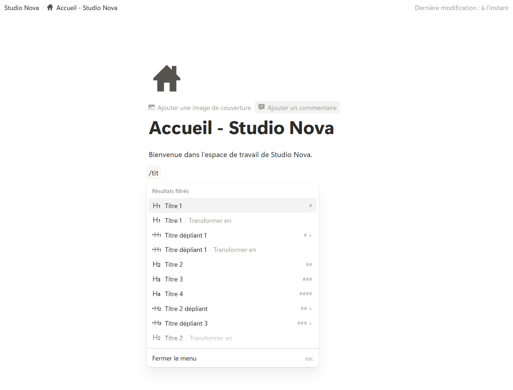
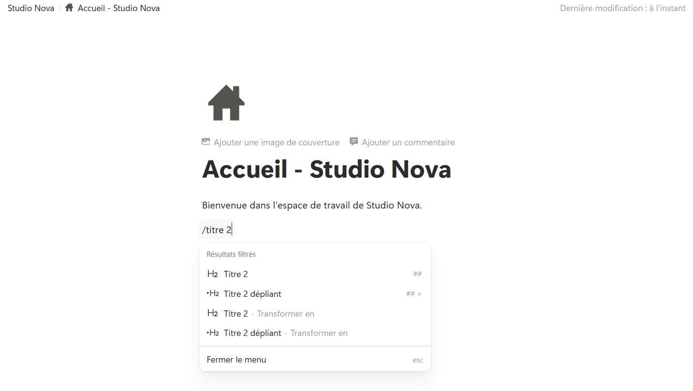
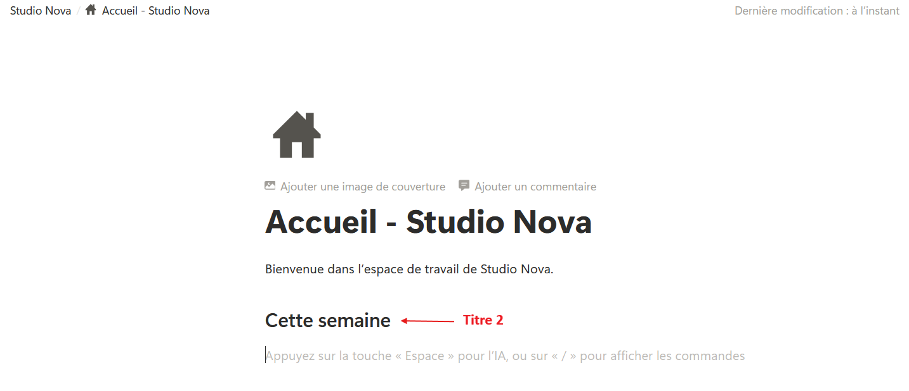

La commande « / »
Étape 1 : comprendre
Tu sais maintenant qu'une page est faite de blocs. Quand tu tapes du texte, Notion crée un bloc texte. Mais comment ajouter un titre, une case à cocher ou une image ? Avec un seul geste, que tu vas utiliser des dizaines de fois par jour : la barre oblique.
Sur une ligne vide, tape la touche « / » (la barre oblique, aussi appelée slash). Un menu s'ouvre : il liste tous les types de blocs que tu peux ajouter.
Tu n'as pas besoin de parcourir toute la liste. Continue simplement à taper le nom du bloc que tu cherches : le menu se réduit au fur et à mesure. Par exemple, « /tit » ne montre plus que les titres. Quand le bon bloc est en surbrillance, appuie sur Enter.
Si tu préfères la souris, survole une ligne : un petit « + » apparaît à gauche, à côté de la poignée ⋮⋮. Un clic dessus ouvre le même menu, et ajoute le bloc juste en dessous.
Pour fermer le menu sans rien choisir, appuie sur Esc.

La touche « / » ouvre le menu des blocs : tape le nom du bloc, puis Enter.
Attention : le menu « / » ne s'ouvre que sur une ligne vide ou après un espace. Si tu tapes « / » collé à un mot, par exemple dans « et/ou », Notion pense que tu écris du texte normal. C'est voulu : tu peux toujours écrire une barre oblique dans une phrase.
Essaie le menu « / »
Tape quelques lettres dans le champ, par exemple « titre », « liste » ou « encadré ». Utilise les flèches haut et bas pour choisir, puis Enter pour ajouter le bloc à la fausse page.
Chez Studio Nova, Emma veut ajouter le titre « Cette semaine » sur la page d'accueil. Elle tape « /titre 2 », appuie sur Enter, puis écrit son titre.
Ajouter le titre « Cette semaine »
- Ouvre ta page « Accueil — Studio Nova ».
- Clique à la fin de la phrase de bienvenue et appuie sur Enter : une nouvelle ligne vide apparaît.
- Tape « / ». Le menu des blocs s'ouvre.
- Continue à taper : « titre 2 ». Le menu ne montre plus que quelques blocs.

- Appuie sur Enter. La ligne devient un titre de taille moyenne, encore vide.
- Écris « Cette semaine ».

Astuce : les flèches haut et bas du clavier te déplacent dans le menu « / ». Tu peux donc ajouter n'importe quel bloc sans toucher à la souris.
Exercice · dans Notion
Explorer le menu
- Dans ta page « Accueil — Studio Nova », vérifie que le titre « Cette semaine » est bien en place.
- Sur une ligne vide en dessous, tape « / », puis « liste » : observe les types de listes proposés.
- Appuie sur Esc pour fermer le menu sans rien ajouter.
Résultat attendu : ta page contient la phrase de bienvenue, puis le titre « Cette semaine », plus grand et en gras. Le menu s'est ouvert, filtré sur les listes, puis fermé sans rien ajouter.
Étape 3 : vérifier
Objectif de la leçon
Tu sais maintenant ajouter n'importe quel type de bloc grâce à la commande « / » ou au bouton « + ».
Choisis une réponse avant de valider.
Le menu se filtre en direct. En tapant quelques lettres du nom du bloc, il ne reste que les blocs utiles. C'est bien plus rapide que de faire défiler la liste.
Choisis une réponse avant de valider.
Collée à un mot, la barre oblique est lue comme du texte normal. Pour ouvrir le menu, tape « / » au début d'une ligne vide ou après un espace.